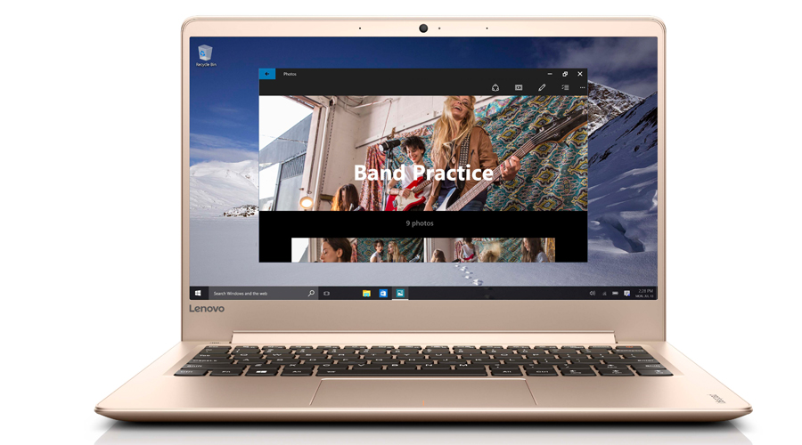

17.990.000
Thông số kỹ thuật CPU: Intel, Core i5 Skylake, 6200U, 2.30 GHz RAM: DDR3L (2 khe RAM), 4 GB, 1600 MHz Đĩa cứng: SSD, 256 GB Màn hình rộng: 13.3 inch, FHD (1920 x 1080 pixels) Cảm ứng: Không Đồ họa: Intel® HD Graphics 520, Share (Dùng chung bộ nhớ với RAM) Đĩa quang: Không Webcam: 0.9 MP(16:9) Chất liệu vỏ: Vỏ kim loại Cổng giao tiếp: 2 x USB 3.0, Micro HDMI Kết nối khác: Bluetooth v4.0 PIN/Battery: Khoảng 8 tiếng Trọng lượng: (Kg) 1.2